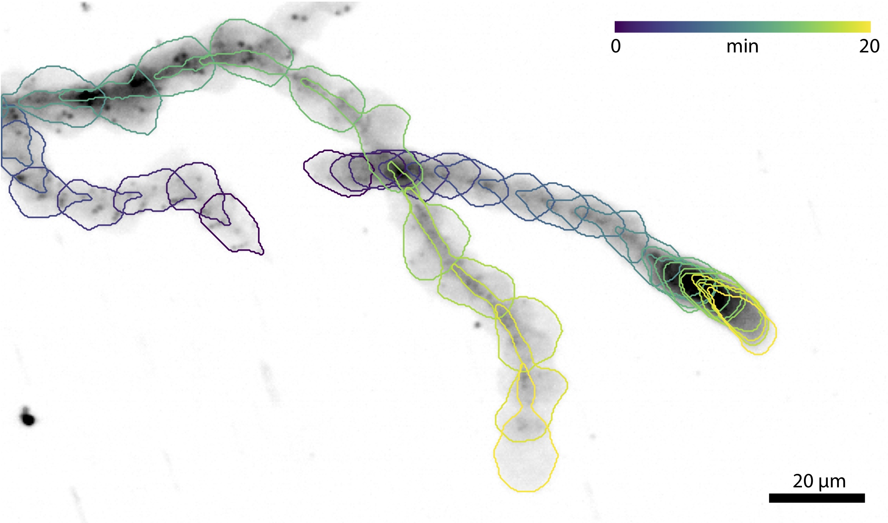
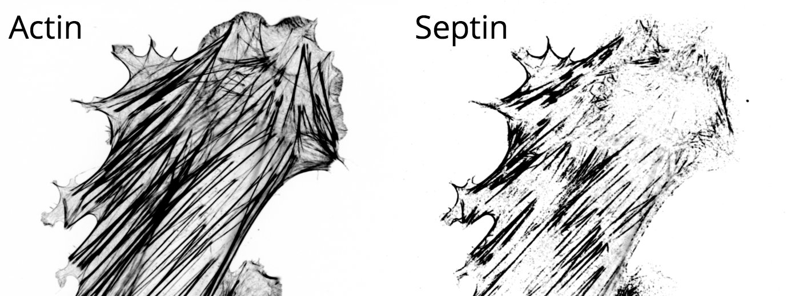
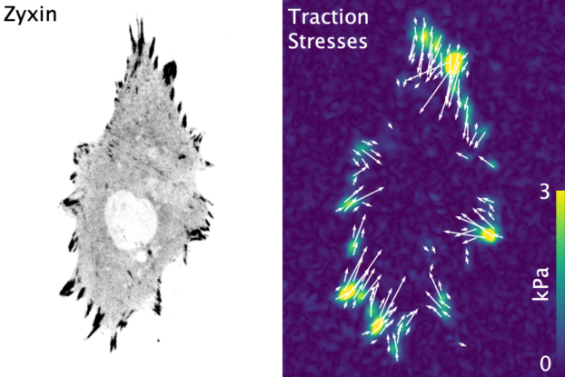

Connecting Mechanics and Biology
Mechanical interactions are essential components of biology. Without them, cells would be unable to change shape, divide, move or even form multicellular tissues. Mechanotransduction is defined as the process of converting mechanical signals into biochemical signals. These mechanical interactions can be initiated inside the cell, such as from myosin motors pulling on actin filaments, or outside the cell, when the cell encounters different physical environments. Our lab is broadly interested in how cells generate, interpret, and use mechanical signals to regulate their behavior. To investigate these processes we primarily use high-resolution quantitative microscopy, coupled with traditional molecular and cell biology approaches and engineering approaches, including micropatterning, optogenetics, and microfluidics.Current Projects
LIM Domain Proteins
A subset of the family of LIM domain proteins have the ability to recognize strained actin filaments. The canonical example of this is zyxin, a protein typically found in focal adhesions, but which relocates to stress fibers tears to help facilitate repair. In the movie we've used a laser to induce a tear and see the protein get recruited. A number of other LIM domain proteins, including paxillin, FHL, and testin, have since been shown to similarly recognize strained actin. This has led to the hypothesis that LIM domain proteins are key players in mechanotransduction - recognizing strained actin via their LIM domains and signaling downstream through their other domains. Some of the questions our lab is interested in include:- How do LIM domains recognize strained actin?
- Can LIM domain protein mechanosensing be regulated?
- How do cells utilize this process of mechanotransduction?
Immune Cell Migration
Migration is a fundamental component of cell biology, allowing single cells to find food and multiple cells to form tissues. It is also a crucial component of our immune response as a variety of cells to need to navigate the many complex environments of the body as they recognize antigens and fight off infections. Most everything we know about migration comes from studying mesenchymal cells because they're slow, large, and relatively flat. Immune cells on the other hand are fast, round, and experts at navigating a host of complex environments. We recently identified that many of the same proteins used for migration in mesenchymal cells are also present in immune cells. Some of the questions we're interested in include:- How does immune cell migration differ from mesenchymal migration?
- How does the environment architecture regulate immune cell migration?
- How do chemokines and other signaling affect immune cell adhesion?

Septin Cytoskeleton
The cytoskeleton is a network of filamentous proteins that is continually self-organizing and rearranging in response to different stimuli. In conjunction with various cross-linkers, motors and regulatory binding proteins, these filaments form specific architectures that spatially and temporally regulate many processes in the cell. While the cytoskeleton's two most famous components, actin and microtubules, have been studied in great detail, significantly less is known about septins. Septins localize to many mechanically active regions such as the cleavage furrow and the base of cilia, and recognize specific regions of curvature in the membrane. Some of the questions we're interested in include:- Do RhoGTPases regulated septin filament formation?
- Why do septins preferentially decorate sub-nuclear stress fibers?
- Are septins involved in mechanotransduction?

Spatiotemporal Dynamics of Force Generation
The molecular mechanisms of force generation are well understood. Myosin motors hydrolyze ATP, producing a conformational change that applies a force to the actin it's bound to. This force is propagated along the actin filament, through adhesions proteins to the extracellular matrix. We lack, however, a thorough understanding of how this process is regulated at the cellular scale. Namely, how does a cell know where to generate forces? And how much force should it generate? We are broadly interested in deciphering these types of questions and the processes they are linked to, including:- How do changes in metabolism affect force production?
- How do smooth muscle myosin isoforms differ from non-muscle myosin isoforms in modulating force production?
- Do neurons generate forces at the axon initial segment?
- And so many more!

Collaborations
While we love what we do, we get equally excited to branch out and explore new areas! In the past this has led to a number of novel areas for us. A few highlights from our collaborations are included below: